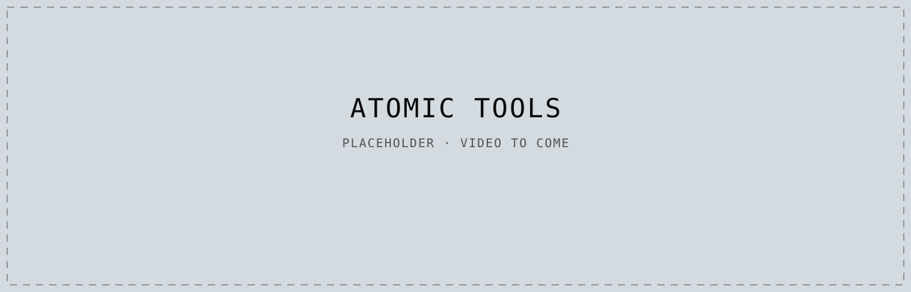
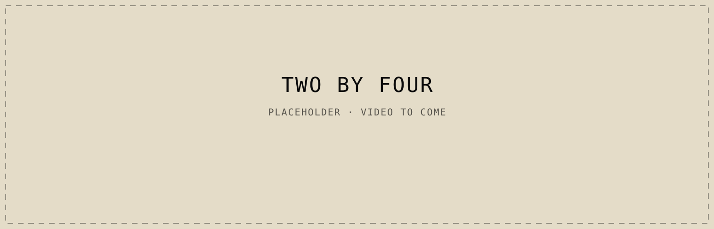

Featured
-
Case study · 2025
AI-powered dashboard for soccer scouts
View case study: Expert Insights
-
Tools · 2025–26
Small browser tools for words and text
Use the tools: Atomic Tools
-
Game
Connections, but the grid is 22 × 44
Play the game: Two by Four

Work Year


Shipped sites Industry
Profile Open to contract and full‑time roles
Comfortable in dense data.
I'm a product designer in Minneapolis. I've spent ten years shipping enterprise software in financial services, agtech, and healthcare. Most of it has been dashboards and complex workflows, where the job is turning dense operational data into clear decisions. I organize screens around the tasks people are actually there to do, and I keep them approachable for newer users without taking depth away from the experienced ones.
I work in Figma every day, from discovery and user flows through high-fidelity UI and developer handoff. I build the design systems that keep a product coherent as it grows. To test a workflow before committing to it, I build working browser prototypes with coding agents. A live build shows how the interface feels with realistic data before anything goes to production.
Before design, I spent a decade programming and analyzing market research studies. That's where the comfort with dense data started.
Almost everything I know, I've learned from experience. I've lived in over fifty homes across ten states and two countries. I've worn just about every collar they've fitted for the working class. In the company of countless people, some who matter to me and some just passing through, I've found beauty and felt understood. It's a whole wide world out there.
- BlueshiftPartner / Design lead · 2024–
- Vault AI SystemsFractional chief design officer · 2025–
- FoundryProduct designer, then director · 2015–2024